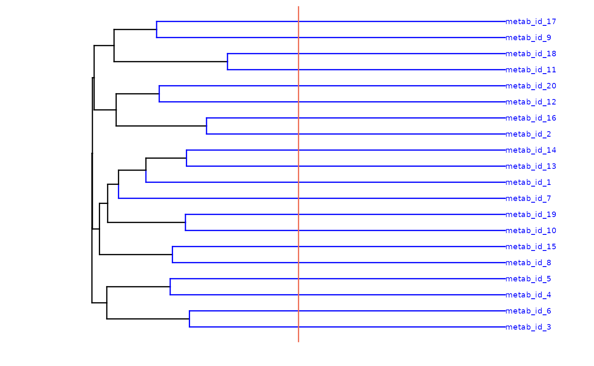

Feature summary
feature_summary.RmdCreate Metaboprep object
library(metaboprep)
# import data
data <- read.csv(system.file("extdata", "dummy_data.csv", package = "metaboprep"), header=T, row.names = 1) |> as.matrix()
samples <- read.csv(system.file("extdata", "dummy_samples.csv", package = "metaboprep"), header=T, row.names = 1)
features <- read.csv(system.file("extdata", "dummy_features.csv", package = "metaboprep"), header=T, row.names = 1)
# create object
m <- Metaboprep(data = data, samples = samples, features = features)
# print
summary(m)
#> Metaboprep Object Summary
#> --------------------------
#> Samples : 100
#> Features : 20
#> Data Layers : 1
#> Layer Names : input
#>
#> Sample Summary Layers : none
#> Feature Summary Layers: none
#>
#> Sample Annotation (metadata):
#> Columns: 5
#> Names : sample_id, age, sex, pos, neg
#>
#> Feature Annotation (metadata):
#> Columns: 5
#> Names : feature_id, platform, pathway, derived_feature, xenobiotic_feature
#>
#> Exclusion Codes Summary:
#>
#> Sample Exclusions:
#> Exclusion | Count
#> -----------------
#> user_excluded | 0
#> extreme_sample_missingness | 0
#> user_defined_sample_missingness | 0
#> user_defined_sample_totalpeakarea | 0
#> user_defined_sample_pca_outlier | 0
#>
#> Feature Exclusions:
#> Exclusion | Count
#> -----------------
#> user_excluded | 0
#> extreme_feature_missingness | 0
#> user_defined_feature_missingness | 0Run feature summary
feature_summ <- feature_summary(metaboprep = m,
source_layer = "input",
outlier_udist = 1.0,
tree_cut_height = 0.5,
output = "data.frame")| feature_id | missingness | outlier_count | n | mean | sd | median | min | max | range | skew | kurtosis | se | missing | var | disp_index | coef_variance | W | log10_W | k | independent_features |
|---|---|---|---|---|---|---|---|---|---|---|---|---|---|---|---|---|---|---|---|---|
| metab_id_1 | 0 | 5 | 100 | 0.511 | 0.293 | 0.530 | 0.000 | 0.993 | 0.992 | -0.123 | -1.231 | 0.029 | 0 | 0.086 | 0.168 | 0.574 | 0.949 | 0.744 | 1 | TRUE |
| metab_id_2 | 0 | 0 | 100 | 0.521 | 0.310 | 0.547 | 0.018 | 0.993 | 0.975 | -0.150 | -1.404 | 0.031 | 0 | 0.096 | 0.184 | 0.594 | 0.924 | 0.834 | 2 | TRUE |
| metab_id_3 | 0 | 10 | 100 | 0.488 | 0.283 | 0.504 | 0.001 | 0.995 | 0.994 | -0.036 | -1.109 | 0.028 | 0 | 0.080 | 0.165 | 0.580 | 0.963 | 0.749 | 3 | TRUE |
| metab_id_4 | 0 | 5 | 100 | 0.464 | 0.286 | 0.466 | 0.004 | 0.992 | 0.988 | 0.092 | -1.199 | 0.029 | 0 | 0.082 | 0.177 | 0.617 | 0.954 | 0.833 | 4 | TRUE |
| metab_id_5 | 0 | 11 | 100 | 0.521 | 0.293 | 0.547 | 0.004 | 0.976 | 0.972 | -0.219 | -1.161 | 0.029 | 0 | 0.086 | 0.164 | 0.561 | 0.945 | 0.782 | 5 | TRUE |
| metab_id_6 | 0 | 7 | 100 | 0.490 | 0.259 | 0.473 | 0.007 | 0.993 | 0.986 | 0.007 | -1.006 | 0.026 | 0 | 0.067 | 0.137 | 0.528 | 0.973 | 0.803 | 6 | TRUE |
| metab_id_7 | 0 | 7 | 100 | 0.479 | 0.277 | 0.441 | 0.029 | 0.992 | 0.963 | 0.135 | -1.211 | 0.028 | 0 | 0.077 | 0.160 | 0.579 | 0.953 | 0.899 | 7 | TRUE |
| metab_id_8 | 0 | 0 | 100 | 0.476 | 0.312 | 0.491 | 0.001 | 0.999 | 0.998 | 0.059 | -1.350 | 0.031 | 0 | 0.097 | 0.205 | 0.656 | 0.936 | 0.796 | 8 | TRUE |
| metab_id_9 | 0 | 10 | 100 | 0.468 | 0.260 | 0.489 | 0.005 | 0.975 | 0.971 | 0.000 | -1.090 | 0.026 | 0 | 0.068 | 0.144 | 0.556 | 0.968 | 0.800 | 9 | TRUE |
| metab_id_10 | 0 | 0 | 100 | 0.524 | 0.290 | 0.532 | 0.019 | 0.993 | 0.974 | -0.158 | -1.252 | 0.029 | 0 | 0.084 | 0.161 | 0.554 | 0.945 | 0.841 | 10 | TRUE |
Feature summary attributes
In addition to the summary data, the hierarchical cluster dendrogram
is appended to the returned data.frame as and
attribute. This can be accessed with the attribute name:
[source_layer]_tree, in this case we summarised the
input data, therefore the attribute name is
input_tree.
suppressPackageStartupMessages(library(dendextend))
library(ggplot2)
# extract tree from attributes
tree <- attr(feature_summ, 'input_tree')
dend <- stats::as.dendrogram(tree)
# color the independent features blue
metab_color <- feature_summ[, c("feature_id", "independent_features")]
metab_color <- metab_color[match(labels(dend), metab_color$feature_id), ]
metab_color$color <- ifelse(metab_color$independent_features==TRUE, "blue", "black")
# format dendrogram for ploting
dend <- dend |>
dendextend::set("labels_cex", 0.5) |>
dendextend::set("labels_col", metab_color$color) |>
dendextend::set("branches_lwd", 0.5) |>
dendextend::set("branches_k_color", value = metab_color$color)
# plot
ggplot(dend, horiz = TRUE) +
geom_hline(yintercept = 0.5, color = "coral2") 
Run feature summary on subset
Using the sample_ids and feature_ids
arguments you can run the summary for a subset of the data. Note: all
rows will be return, however summary data will only be returned for the
specified ids.
feature_summ <- feature_summary(metaboprep = m,
source_layer = "input",
outlier_udist = 1.0,
tree_cut_height = 0.5,
sample_ids = c("id_96", "id_97", "id_98", "id_99", "id_100"),
feature_ids = c("metab_id_1", "metab_id_2", "metab_id_3"),
output = "data.frame")| feature_id | missingness | outlier_count | n | mean | sd | median | min | max | range | skew | kurtosis | se | missing | var | disp_index | coef_variance | W | log10_W | k | independent_features |
|---|---|---|---|---|---|---|---|---|---|---|---|---|---|---|---|---|---|---|---|---|
| metab_id_1 | 0 | 1 | 5 | 0.498 | 0.300 | 0.627 | 0.000 | 0.756 | 0.755 | -0.736 | -1.357 | 0.134 | 0 | 0.090 | 0.181 | 0.603 | 0.853 | 0.606 | 1 | TRUE |
| metab_id_2 | 0 | 2 | 5 | 0.503 | 0.350 | 0.423 | 0.018 | 0.950 | 0.931 | -0.078 | -1.715 | 0.157 | 0 | 0.123 | 0.244 | 0.697 | 0.970 | 0.751 | 2 | TRUE |
| metab_id_3 | 0 | 1 | 5 | 0.460 | 0.243 | 0.420 | 0.202 | 0.807 | 0.605 | 0.294 | -1.842 | 0.109 | 0 | 0.059 | 0.128 | 0.528 | 0.958 | 0.980 | 3 | TRUE |
| metab_id_4 | NA | NA | NA | NA | NA | NA | NA | NA | NA | NA | NA | NA | NA | NA | NA | NA | NA | NA | NA | NA |
| metab_id_5 | NA | NA | NA | NA | NA | NA | NA | NA | NA | NA | NA | NA | NA | NA | NA | NA | NA | NA | NA | NA |
| metab_id_6 | NA | NA | NA | NA | NA | NA | NA | NA | NA | NA | NA | NA | NA | NA | NA | NA | NA | NA | NA | NA |
| metab_id_7 | NA | NA | NA | NA | NA | NA | NA | NA | NA | NA | NA | NA | NA | NA | NA | NA | NA | NA | NA | NA |
| metab_id_8 | NA | NA | NA | NA | NA | NA | NA | NA | NA | NA | NA | NA | NA | NA | NA | NA | NA | NA | NA | NA |
| metab_id_9 | NA | NA | NA | NA | NA | NA | NA | NA | NA | NA | NA | NA | NA | NA | NA | NA | NA | NA | NA | NA |
| metab_id_10 | NA | NA | NA | NA | NA | NA | NA | NA | NA | NA | NA | NA | NA | NA | NA | NA | NA | NA | NA | NA |
Run sample & feature summaries together
summ <- summarise(metaboprep = m,
source_layer = "input",
outlier_udist = 1.0,
tree_cut_height = 0.5,
output = "data.frame")
str(summ)
#> List of 2
#> $ sample_summary :'data.frame': 100 obs. of 24 variables:
#> ..$ sample_id : chr [1:100] "id_100" "id_99" "id_98" "id_97" ...
#> ..$ missingness : num [1:100] 0 0 0 0 0 0 0 0 0 0 ...
#> ..$ tpa_total : num [1:100] 38.7 39.5 45.1 37.3 31.5 ...
#> ..$ tpa_complete_features: num [1:100] 38.7 39.5 45.1 37.3 31.5 ...
#> ..$ outlier_count : num [1:100] 0 0 1 2 3 2 0 0 0 2 ...
#> ..$ pc1 : num [1:100] 1.087 0.418 -2.249 -0.619 2.231 ...
#> ..$ pc2 : num [1:100] 0.321 0.573 0.131 0.749 -0.181 ...
#> ..$ pc3 : num [1:100] 0.00338 1.58112 0.04016 0.5436 -0.9382 ...
#> ..$ pc4 : num [1:100] 0.4766 0.1105 -0.6054 1.9563 0.0382 ...
#> ..$ pc5 : num [1:100] 0.837 -1.154 -0.72 -1.659 -0.776 ...
#> ..$ pc6 : num [1:100] 0.256 -0.256 0.763 -0.174 2.453 ...
#> ..$ pc7 : num [1:100] -0.162 -0.103 -0.614 -0.669 1.494 ...
#> ..$ pc8 : num [1:100] -0.2756 0.1153 0.0756 -2.1717 1.0719 ...
#> ..$ pc9 : num [1:100] 0.577 1.961 -0.521 -0.463 0.236 ...
#> ..$ pc10 : num [1:100] -1.466 -1.201 -1.457 1.769 0.349 ...
#> ..$ pc1_3_sd_outlier : num [1:100] 0 0 0 0 0 0 0 0 0 0 ...
#> ..$ pc2_3_sd_outlier : num [1:100] 0 0 0 0 0 0 0 0 0 0 ...
#> ..$ pc3_3_sd_outlier : num [1:100] 0 0 0 0 0 0 0 0 0 0 ...
#> ..$ pc1_4_sd_outlier : num [1:100] 0 0 0 0 0 0 0 0 0 0 ...
#> ..$ pc2_4_sd_outlier : num [1:100] 0 0 0 0 0 0 0 0 0 0 ...
#> ..$ pc3_4_sd_outlier : num [1:100] 0 0 0 0 0 0 0 0 0 0 ...
#> ..$ pc1_5_sd_outlier : num [1:100] 0 0 0 0 0 0 0 0 0 0 ...
#> ..$ pc2_5_sd_outlier : num [1:100] 0 0 0 0 0 0 0 0 0 0 ...
#> ..$ pc3_5_sd_outlier : num [1:100] 0 0 0 0 0 0 0 0 0 0 ...
#> ..- attr(*, "input_varexp")= Named num [1:20] 0.0996 0.0884 0.0795 0.0691 0.0669 ...
#> .. ..- attr(*, "names")= chr [1:20] "PC1" "PC2" "PC3" "PC4" ...
#> ..- attr(*, "input_num_pcs_scree")= num 3
#> ..- attr(*, "input_num_pcs_parallel")= int 14
#> ..- attr(*, "input_outlier_udist")= num 1
#> $ feature_summary:'data.frame': 20 obs. of 21 variables:
#> ..$ feature_id : chr [1:20] "metab_id_1" "metab_id_2" "metab_id_3" "metab_id_4" ...
#> ..$ missingness : num [1:20] 0 0 0 0 0 0 0 0 0 0 ...
#> ..$ outlier_count : num [1:20] 5 0 10 5 11 7 7 0 10 0 ...
#> ..$ n : num [1:20] 100 100 100 100 100 100 100 100 100 100 ...
#> ..$ mean : num [1:20] 0.511 0.521 0.488 0.464 0.521 ...
#> ..$ sd : num [1:20] 0.293 0.31 0.283 0.286 0.293 ...
#> ..$ median : num [1:20] 0.53 0.547 0.504 0.466 0.547 ...
#> ..$ min : num [1:20] 0.000465 0.018364 0.001192 0.004107 0.003896 ...
#> ..$ max : num [1:20] 0.993 0.993 0.995 0.992 0.976 ...
#> ..$ range : num [1:20] 0.992 0.975 0.994 0.988 0.972 ...
#> ..$ skew : num [1:20] -0.123 -0.1496 -0.0365 0.0924 -0.2185 ...
#> ..$ kurtosis : num [1:20] -1.23 -1.4 -1.11 -1.2 -1.16 ...
#> ..$ se : num [1:20] 0.0293 0.031 0.0283 0.0286 0.0293 ...
#> ..$ missing : num [1:20] 0 0 0 0 0 0 0 0 0 0 ...
#> ..$ var : num [1:20] 0.0859 0.0959 0.0804 0.0819 0.0856 ...
#> ..$ disp_index : num [1:20] 0.168 0.184 0.165 0.177 0.164 ...
#> ..$ coef_variance : num [1:20] 0.574 0.594 0.58 0.617 0.561 ...
#> ..$ W : num [1:20] 0.949 0.924 0.963 0.954 0.945 ...
#> ..$ log10_W : num [1:20] 0.744 0.834 0.749 0.833 0.782 ...
#> ..$ k : int [1:20] 1 2 3 4 5 6 7 8 9 10 ...
#> ..$ independent_features: logi [1:20] TRUE TRUE TRUE TRUE TRUE TRUE ...
#> ..- attr(*, "input_tree")=List of 7
#> .. ..$ merge : int [1:19, 1:2] -11 -2 -3 -13 -10 -8 -4 -12 -9 -1 ...
#> .. ..$ height : num [1:19] 0.672 0.723 0.764 0.771 0.774 ...
#> .. ..$ order : int [1:20] 3 6 4 5 8 15 10 19 7 1 ...
#> .. ..$ labels : chr [1:20] "metab_id_1" "metab_id_2" "metab_id_3" "metab_id_4" ...
#> .. ..$ method : chr "complete"
#> .. ..$ call : language stats::hclust(d = dist_matrix, method = "complete")
#> .. ..$ dist.method: NULL
#> .. ..- attr(*, "class")= chr "hclust"
#> ..- attr(*, "input_outlier_udist")= num 1
#> ..- attr(*, "input_tree_cut_height")= num 0.5